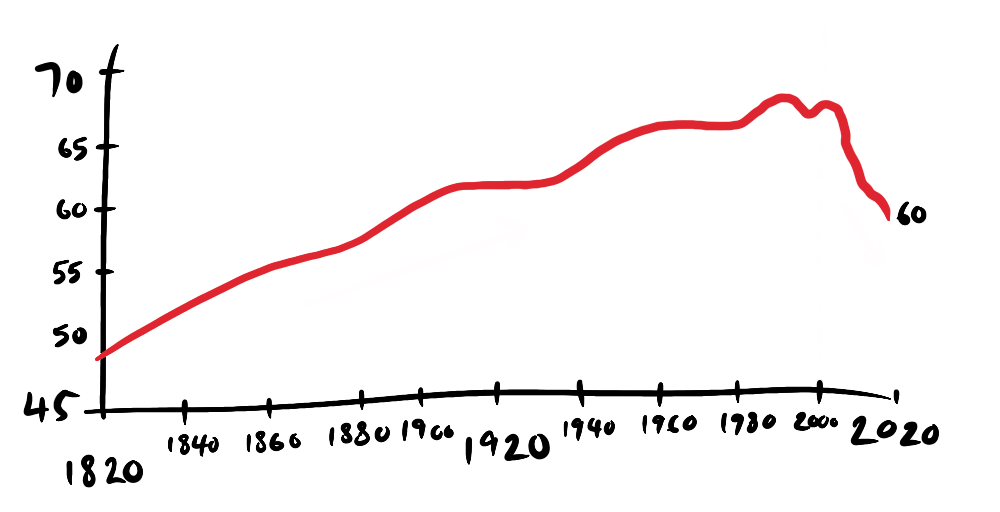

These are a random assortment of (not real) graphs—visual stories that help me understand the world, which are collected from all the posts. They are not always based on real data, but rather on my insights and experiences, like the one above that shows the position of humans in relation to time and the scale of the Universe, from it's subjective.
I hope you find them interesting and thought-provoking.

From Diminishing Returns on Happiness, this is an interactive not real graph—tap to see the different applications.
After starting about 50 game dev projects and only getting a couple published, I thought I'd distill my insights about exactly how I fail so consistently.
MY UNDERSTANDING OF LOCAL MINIMA & MAXIMA

This is a sketch in lieu of a post—the concept of local minima and maxima is a mental model I often use to understand inefficiencies in the world. The basic idea is that many solutions to a problem aren't actually , but people fail to deviate from those solutions because, in order to travel to a satisficing solution, they have to traverse negative terrain.
A good example would be the transfer from fossil fuels to renewables. Before getting to the more satisficing solution, you have to bear the costs associated with R&D, social inertia, early inefficiencies, regulations etc. And so the development of renewables has been slower than necessary due to a reluctance to traverse that terrain.
ANABOLISM VS CATABOLISM

From Non-Zero-Sum Gains, these graphs shows the cycle of anabolism and catabolism in fitness. Above is the cycle as I understand it to work during Shred and Gain phases. The following and from normal eating and fasting (to try and emulated the shred/gain cycle).

ABSOLUTE VALUE vs RELATIVE VALUE
In our post on relative gains we explore the problem with judging value relative to others.

These graphs show the negative results of comparison (the thief of joy) with a story about Metallica and Megadeath.
In exploring the idea of a positive double standard this graph shows the lack of social mobility in the States, demonstrating the lack of a meritocracy.
GINI INDEX
One of the counterintuitive insights I've had is that globalisation, despite its exploitative beginnings, has yielded gains for the developing world in reducing extreme poverty. This is reflected in the Gini index (the graph is actually based on a real graph).